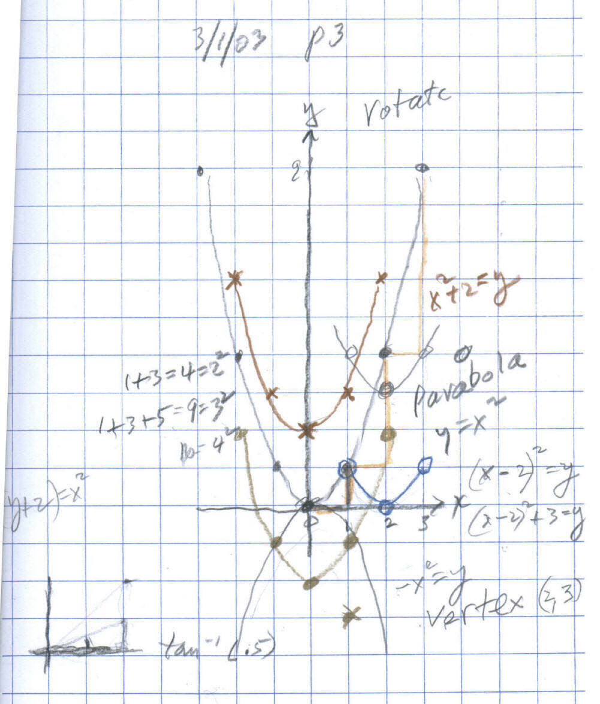

50 year-old M.D. Tim, enjoys solving problems in Don's worksheet book
more things are added as they go on...
Tim wants to learn calculus to help him understand the mathematics in "neurophysiology and digital signal processing"- which involves Fourier series. He had seen one of Don's ads in Scientific American magazine from about 10 years ago. He called on January 30, 2003 to order Don's worksheet book and "Changing shapes With Matrices". He started work on the worksheet book as soon as he received it.
On Feb. 9 Tim sent some work he did form Ch. 1 by fax; his only mistake was an incorrect scale on his graph of the partials sums from the infinite series 1/2 + 1/4 + 1/8 + ... but realized it would approach 1 ( goes to 1, or -> 1)
Tim started to get us connected via Yahoo IM. He bought a mike and a webcam. He could see Don's webcam picture from his website until they would connect on Yahoo.
On Feb. 17 in a phone conversation Tim they went through the infinite series starting with 1/2->1 and 1/3 -> 1/2. He predicted from the pattern that starting with 1/4 ->1/3, and starting with 1/n -> 1/(n-1). They worked on 2/5 + (2/5)^2 + (2/5)^3 + ... and he found that goes to 2/3 and he generalized that A/B + (A/B)^2 + (A/B)^3 + ... would go to A/(B-A) . Don also showed Tim how Jeff, a HS student, got the infinite series ( see Lizzy and Cheryl's page at http://www.mathman.biz/html/lizcheryl.html ). Tim went through p. 19, changing the decimal 0.343434... to a fraction using the infinite series for that 34/100 + 34/10000 + 34/1000000 + ... Later in the day they went over writing a program in on the TI 83 plus, to get the limit of an infinite series as on p.19. Don left him with 4 things to work on for the next session
On Feb. 22 they went over the infinite repeating decimal for 3/9 = 0.3333..., 7/9 = 0.7777... and he could do 37/99 = 0.373737... Tim had started on ch. 2, the cookie sharing. He found that sharing 5 cookies between 3 people each person would get 1 2/3 cookies. Then Don gave him the problem of using the special scissors that only cut into 2 pieces. He got 1 + 1/2 + 0/4 + 1/8 + 0/16 +... and he saw that this could be written as a bimal 1.101010... or as a decimal 1.6666... Then they got into a discussion of what would happen if they did the same problem sharing 5 cookies between 3 people, but used scissors that only cut into 7 pieces! He found 1 2/3 = 1.666... (in base 10) = 1.101010... (in base 2) = 1.4444... (in base 7). WOW! [There is something there that Don hasn't verbalized!]
On
Feb. 26 Don received this email:
I was working my way through the cookie problem and while
using the scissors that can only cut into two pieces the binary system suddenly
clicked and made sense to me for the first time . I could find the binary
equivalent of 1/5 and other fractions.
On March 1 Don gave Tim 2 linear graphs for which he was to find the equations; Tim did this easily. They talked about the guess my rules on p88. Tim was stuck on #3 {(0,0), (1,1), (2,3), (4,6)..} They looked at the differences and the second differences.
Then they worked on graphing y = x2 looking at the pattern (tan color on graph- from (0,0) over 1, up 1, over 1 up 3, over up 5- these are odd numbers and 1+3+5 = 9 = 32 ), then moving the parabola up 2 units (red); then move to the right (blue)- Tim got y = x2 - 2 at first, but realized that moves the original parabola down 2. Then he came up with the equation y = (x-2)2 .

Tim then had 4 things to do for next time- turn the original parabola upside down, find the rule for p88 #3, move the parabola right 2, up 3, and rotate the parabola 90o CW.
On March 8: Tim looked at the differences in functions. On p.88 #3 the rule was x(x+1)/2 = y or (1/2)x2 + (1/2)x = y. The second differences are constant and = 1. In x2 = y the second differences are constant and = 2. Tim correctly predicted that for the function 2x2 + 3 = y, the second differences are constant and = 4.
On March 10: Tim got the rule for the shuttle puzzle and the tower puzzle, also in chapter 6. Don had him do powers of 2 with negative exponents.
On March 17: In graphing x(x+1)/2 = y or (1/2)x2 + (1/2)x = y from March 8, Don and Tim realized that the pattern in the parabola was the same as in x2 = y
except it would go over 1, up 1/2 of 1, over 1 up 1/2 of 3... They found the vertex, with the x-coordinate 1/2 way between -1 and 0 or -1/2, then put this in the equation to find the y-coordinate of -1/4.
On March 24: Don worked with Tim on using Derive to solve equations, finding the limit of the series 2/5 + (2/5)^2 + (2/5)^3 + ..., and expanding (x+y)^2.
On March 31, '03: Don started Tim on trigonometry as done on his page http://www.mathman.biz/html/trig.html . They went over Tim's work on the SA/Vol problem on p. 122 #6. Don showed Tim using the webcam, how to find the growth of the nautilus shell on p. 104 in Ch. 6. Tim came up with the average of 3 ratios of the radius vectors every 360o to be 3.24 (very very close to Land's 3.2) and he came up with the 3 measures of the angle between the tangent and the radius vectors to be 80.16o (very very close to Land's 79.5o)!!
On April 7, '03: .. coming